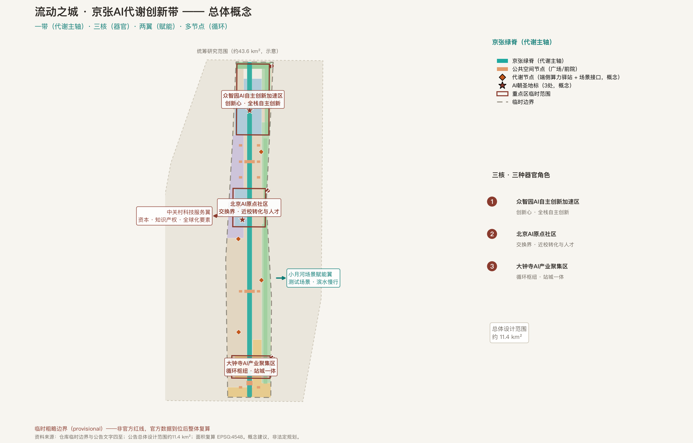
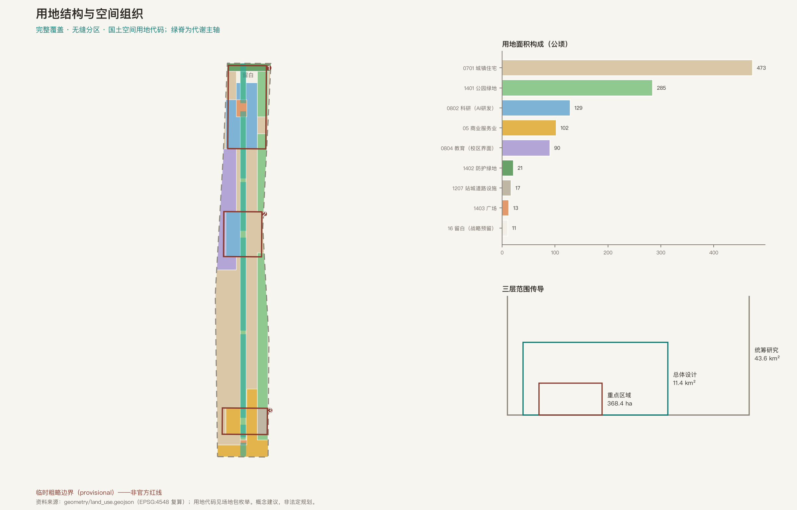
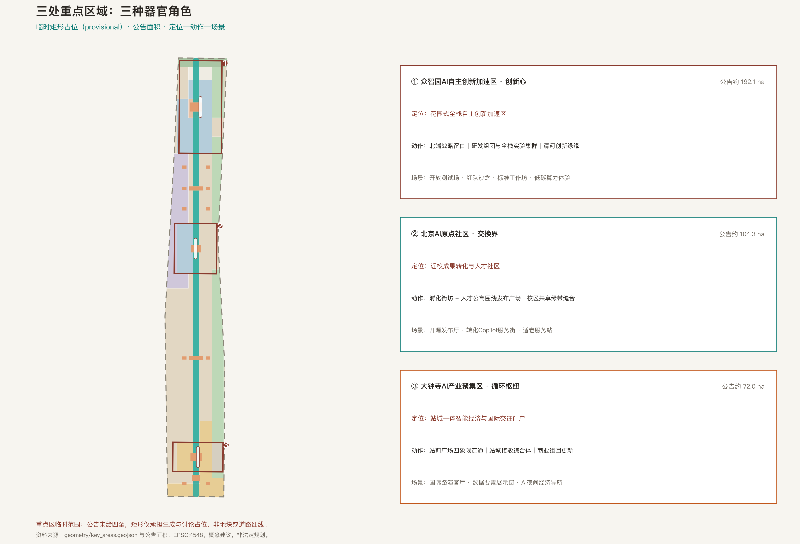
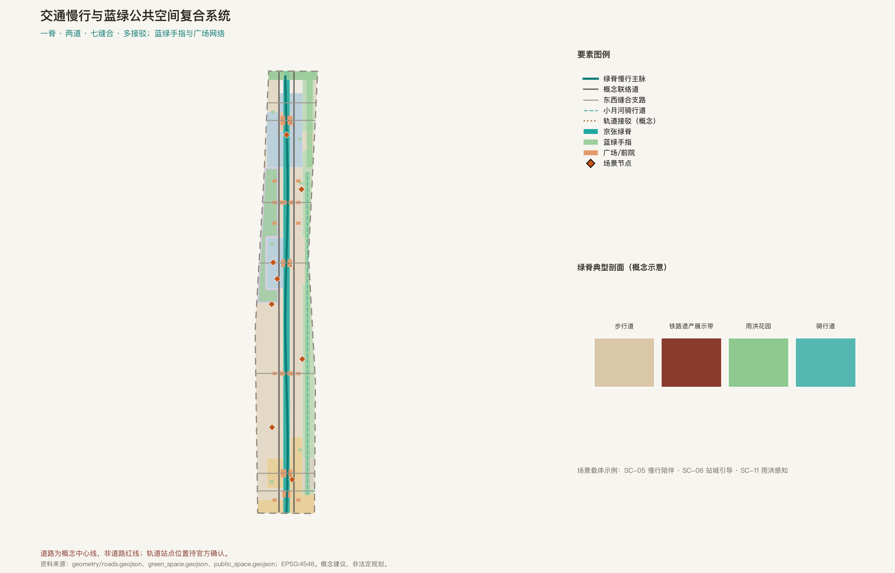
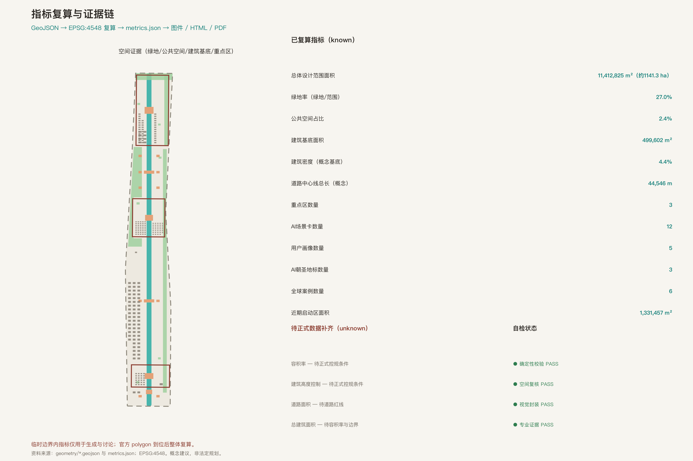

City of Flow: Urban Design for the Centennial Jing-Zhang AI Metabolism Belt
Under the overall concept 'City of Flow', the Jing-Zhang railway heritage corridor is reinterpreted as the city's metabolic spine: one belt, three cores, two wings, many nodes. The package is generated on the repository's provisional rough boundaries with a fully recomputable spatial and evidence system; every spatial suggestion is a conceptual reference for professional deepening.
City of Flow: Urban Design for the Centennial Jing-Zhang AI Metabolism Belt
A century ago, Zhan Tianyou led the Jing-Zhang Railway — the first trunk railway independently designed and built by China. A century later, the same corridor is imagined as the metabolism belt of global AI innovation. Every spatial suggestion in this proposal is a conceptual suggestion, reference scheme, or material for professional teams to deepen; it does not replace formal planning and does not constitute a government-approved conclusion 来源.
Design Basis and Source List
The primary basis of this proposal is the qualification pre-announcement issued by the Beijing Municipal Commission of Planning and Natural Resources (Haidian Branch): the three scope levels (coordinated research 43.6 km², overall design 11.4 km², key detailed-design areas 368.4 ha), the north-to-south naming and approximate areas of the three key areas, and the design tasks and deliverable depth all come from the announcement text 来源. The agent-facing taskbook excerpt supplements the three positioning statements, five functions, three areas and two wings, six mandatory tasks, ten co-creation principles, and the unified boundary clause; it is the direct basis for task responses 来源.
The spatial generation base uses the repository-maintained provisional rough boundaries: PROV-SITE-001 for the overall design area and PROV-KEY-001/002/003 for the three key areas. They are provisional constraints, usable only for generation, visualization, and self-check; they must not serve as official redlines, approval bases, or precise-area bases. This organizer data gap does not block content scoring; when official polygons arrive, all layers and metrics will be recalculated together 来源 来源.
Source usability follows the grading of the public source registry: formal-ready, background-only, and provisional-only materials each have defined use boundaries explained in the text; self-collected global case knowledge is registered as background reference and supports no quantitative commitment 来源. The processed fact pack serves as a reading navigation layer, not a new authority 来源. The site package's enums, ranges, and schemas constrain every structured field 来源.

The readable conclusion of the current data state: official precise redlines, regulatory controls, road redlines, ownership, and municipal data are all pending official data. The proposal therefore splits every precision-sensitive conclusion into three tiers — recomputable from submitted geometry, pending official controls, and operational performance indicators requiring ongoing calibration — placed in the metrics, assumptions, and risk chapters respectively 来源.
Three-Level Scope Framework
The proposal organizes its depth along the three official scope levels: the coordinated research area (about 43.6 km²) answers AI innovation ecology, strategic positioning, and future city form; the overall design area (about 11.4 km², the urban and industrial districts within 1–2 km of the Jing-Zhang heritage park) answers the renewal framework, spatial structure, transport and municipal support, and character; the key detailed-design areas (368.4 ha, three districts) answer functions, spatial moves, public-space connectivity, and scenario projects 来源.
The transmission logic across levels is "ecology judgment → spatial structure → district verification": ecology and industry judgments at the coordinated level are realized through land use, the green spine, and the renewal framework at the overall level, then verified by concrete functions, buildings, and public spaces at the key level. The submitted boundary and the three key areas are provisional constraints, and every level carries the same precision caution 空间数据 空间数据.
The overall concept is the "City of Flow": the Jing-Zhang corridor is imagined as the city's metabolic system — four flows (data, talent, capital, eco-energy) exchange along one green spine; the three key areas act as three organs; the two wings provide element and scenario empowerment; distributed metabolism nodes bring exchange to everyday walking distance. The spatial structure is summarized as "one belt, three cores, two wings, many nodes" — a working method, not a new redline 标准 深度.
| Level | Design question | City of Flow answer | Evidence |
|---|---|---|---|
| Coordinated research, 43.6 km² | Innovation ecology and future city form | Four-flow circulation model; naming and identity system | compliance matrix; case atlas |
| Overall design, 11.4 km² | Renewal framework, structure, support | Green metabolic spine + east-west stitching + blue-green fingers | 空间数据 |
| Key areas, 368.4 ha | Detailed design of three districts | Three organ roles: innovation heart, exchange interface, circulation hub | 空间数据 |
Coordinated Research Area: Industry and Future City Research
Overall concept and naming system (agent.1). The master name is "City of Flow"; the belt is named the "Jing-Zhang AI Metabolism Belt". The naming system: one belt (metabolic spine), three cores (Zhongzhiyuan "Innovation Heart", Origin Community "Exchange Interface", Dazhongsi "Circulation Hub"), two wings (Zhongguancun technology-service wing, Xiaoyuehe scenario-empowerment wing), four flows (data, talent, capital, eco-energy), and many nodes (metabolism nodes: edge-compute stations + scenario interfaces). The English abbreviation "Flow Belt" is used for international communication 来源.
Visual identity and logo direction (conceptual). The logo direction abstracts the two rails of the Jing-Zhang Railway into two parallel flowing lines converging at an "M" (Metabolism) node; the color gradient runs from heritage brick-red to intelligent cyan, symbolizing the 1909–2026 metabolic succession; auxiliary shapes derive from rail spikes and fishplates. No uncleared font, image, or trademark is used; trademark search and rights clearing are required before deepening 深度.
Three positioning statements, five functions, and the three-area-two-wing loop. The three positioning statements are translated into metabolic language: the Centennial Jing-Zhang Cultural Belt is the memory layer, the Urban AI Life Experience Belt is the perception layer, and the AI Integrated Innovation Belt is the organ layer. The five functions (full-stack independent innovation, world-class ecosystem, scenario empowerment, intelligent vital city, global governance discourse) correspond to organs, blood, nerves, vitals, and immunity. The two wings complete the loop: the Zhongguancun wing delivers capital and IP services; the Xiaoyuehe wing delivers testing and experience scenarios 来源.
Global AI ecosystem cases (six). Six public cases provide mechanism lessons: Boston Kendall Square (permeable campus interfaces), Toronto MaRS Discovery District (district-level scenario opening), Singapore one-north (blue-green corridors linking innovation clusters), Paris-Saclay (coordinated-research-scale ecology), Seoul Sangam/Pangyo (culture-content and digital-industry coupling), Shenzhen Nanshan (event density driving ecology). Cases are qualitative mechanism lessons only — no investment, output, or company-list commitments 来源.
Ecosystem atlas and element mechanisms. Eight elements — land, space, industry, capital, talent, compute, data, scenarios — circulate within the belt: space supply is expressed through land-use zoning; compute and data services through conceptual nodes; capital and talent services through the two wings. The transferable mechanism is "scenario open list → testing and validation → demonstration citation", written entirely as conceptual suggestions 空间数据 指标.

Overall Design Area: Urban Renewal and Regulatory-Plan-Level Urban Design
The renewal framework follows regulatory-plan methodology: first lock the adopted provisional boundary and constraints, then generate land use, buildings, roads, green space, public space, and phasing layers, and finally recompute metrics from those layers 标准. The land-use partition covers the submitted boundary completely with no overlaps or gaps; adjacent polygons share boundary coordinates; all codes use the national territorial land-classification semantics 标准 空间数据.
The land-use logic follows metabolism: research land (0802) concentrates in Zhongzhiyuan and west of the Origin Community for innovation production; commercial-service land (05) concentrates at Dazhongsi and the South Gate for circulation and consumption; urban residential land (0701) forms the living fabric of both wings; education land (0804) sits at the campus interface as the talent-flow entry; park green (1401), protective green (1402), and plaza land (1403) form the blue-green metabolic layer; transport-hub land (1207) serves station-city connection east of Dazhongsi; strategic reserve land (16) is kept at Zhongzhiyuan's north end 深度.
Buildings and intensity follow "conceptual massing, untouched controls": footprints are expressed as retain/renovate/new conceptual categories with concept floor ranges; FAR, height, and density controls are missing from the public site package and are registered as pending official data — no fabricated precision 深度 指标.
The renewal framework proposes "keep the skeleton, replace the metabolism, repair the interfaces": retain the block skeleton and most existing buildings, replace infrastructure with an elastic metabolic layer (stormwater, energy, compute), and repair the east-west interfaces severed by the rail corridor. Project lists and policy suggestions follow in the implementation chapter 深度 指标.
Detailed Design of Key Areas
The three key areas take three "organ" roles; their provisional extents are labeled provisional in the geometry, with announcement approximate areas 空间数据 空间数据 空间数据.

Zhongzhiyuan AI Acceleration Area (Innovation Heart, about 192.1 ha). Positioning: a garden-style full-stack independent-innovation district. Spatial moves: strategic reserve land at the north end; R&D clusters and the full-stack experimental cluster around the innovation plaza at the south; the Qinghe innovation green edge as the low-carbon exchange interface on the east. Functions and scenarios: open testing ground for independent models, public red-team safety sandbox, standards workshops, and low-carbon compute experience points; external access organized toward the North Fifth-Ring gateway (conceptual). Parcel-level retain/renovate/demolish, heights, and redlines await official data 深度.
Beijing AI Origin Community (Exchange Interface, about 104.3 ha). Positioning: a near-campus commercialization and talent community. Spatial moves: incubator blocks (0802) to the west and talent apartments (0701) to the east, organized around the Origin Publishing Plaza; the campus sharing green belt stitches the university interface. Functions and scenarios: open-source publishing hall, technology-transfer copilot service street, age-friendly service stations; slow mobility connects campus, park, and district into a 15-minute innovation living circle (conceptual) 指标.
Dazhongsi AI Industry Cluster (Circulation Hub, about 72.0 ha). Positioning: a station-city integrated intelligent-economy and international gateway. Spatial moves: the station plaza as the core, four-quadrant pedestrian connections (conceptual), a station-city interchange complex on the east; commercial blocks carry intelligent-native consumption. Functions and scenarios: international roadshow salon, data-element compliance showcase, AI night-economy wayfinding; planned green space doubles as event lawns 指标.
Public space, transport, AI scenarios, and implementation dependencies of all three areas are mapped item by item in the compliance matrix; the HTML viewer can switch between areas, and the A3 booklet and A0 boards include key-area masterplans and metric notes 深度.
AI Innovation Ecosystem, Personas, and AI+ Scenarios
Personas (five). Open-source developers (publishing, collaboration, reputation); university researchers (transfer, cross-campus collaboration); startup founders (low-cost space, compute access, testbeds); senior residents (low-disturbance renewal, human-fallback services); international visitors and investors (showcases, connections, multilingual wayfinding). Each persona lists typical needs, spatial responses, and privacy boundaries 来源.
Scenario cards (twelve; four industry test/validation scenarios). SC-01 Open-Source Model Publishing Hall (Origin Community; test/validation), SC-02 Full-Stack Chip-Model Co-Design Open Testbed (Zhongzhiyuan; test/validation), SC-03 AI Safety Red-Team Public Sandbox (Zhongzhiyuan; test/validation), SC-04 Xiaoyuehe Low-Speed Unmanned Sweeping and Logistics Corridor (blue-green finger; test/validation), SC-05 Green-Spine Slow-Mobility Guide and Accessibility Companion, SC-06 Station Four-Quadrant Flow Guidance (Dazhongsi), SC-07 Community Age-Friendly Smart Service Station, SC-08 Campus Transfer Copilot, SC-09 AI Night-Economy Wayfinding (Dazhongsi retail), SC-10 Data-Element Compliance Showcase, SC-11 Blue-Green Stormwater Sensing and Elastic Dispatch, SC-12 Global AI Week Pilgrimage Route Operation 指标.
Each scenario states its users, location, data sources, privacy boundary, human-review mechanism, and operating subject (conceptual). Governance follows data minimization, public or authorized data only, explainability, and mandatory human review; generative-AI content-safety and complaint handling are referenced strictly within the established article boundaries, without overgeneralization 来源. Age-friendly scenarios keep traditional and smart services in parallel, as background reference only 来源.
Scenario-space-operation mapping. Public-space carriers are locatable in the geometry: plazas and forecourts carry publishing and showcase scenarios; the green spine and fingers carry testing and sensing scenarios; station forecourts carry guidance and service scenarios. Operation follows the open loop "scenario open list → application review → public notice → trial run → evaluation" (conceptual); test scenarios are never described as approved operations 空间数据 深度.
Land Use, Building Scale, and Retain-Renovate-Demolish Strategy
The land-use scheme forms a complete, closed, seamless partition of the submitted boundary: nine code classes generated from a unified cut-line grid, adjacent polygons sharing boundary coordinates; per-code areas recomputed in EPSG:4548 and registered as metrics 空间数据 指标.
Buildings distinguish three conceptual expressions: retain (existing blocks, existing_retained), renovate (incubator and commercial block renewal concepts), and new (R&D clusters, talent apartments, station-city complex conceptual massing). Total footprint area and density are recomputed from geometry; concept floor ranges are massing references explicitly labeled as pending official controls 空间数据 指标.
The retain-renovate-demolish conclusion level is strictly controlled: the proposal gives methods and cluster-level conceptual categories only, never parcel-level conclusions; parcel decisions depend on ownership, controls, and engineering data and are listed as pending official data 深度 标准.
Transport, Rail, Municipal Infrastructure, and Public Services
The transport framework is "one spine, two links, seven stitches, many connections": the greenway spine runs north-south with gentle curves echoing the old railway alignment; one conceptual link road on each side; seven east-west stitching streets repair the severance caused by the rail corridor; each key area has a conceptual transit connection, with station positions pending official confirmation 空间数据 指标.
All roads are conceptual centerlines and do not represent road redlines; expressways and primary arterials are outside the editable scope and are recognized only as external conditions. Parking and bicycle storage are conceptually organized around stations and plazas, with scale pending transport studies 深度.
Municipal and new-infrastructure strategy: stormwater elasticity (green spine and protective belt as retention concepts), distributed energy (conceptual nodes), edge-compute stations combined with public services, and integration with conventional utilities. Pipelines, capacity, and engineering feasibility await official municipal data; the proposal offers spatial layout concepts and preconditions for deepening 深度 空间数据.
Public services follow the "human fallback" principle: venues handling medical, social-security, financial, or living-payment services retain on-site guidance and human-operated service; slow mobility and public space are organized for all ages (conceptual) 来源.

Blue-Green Network, Public Space, and Urban Character
The blue-green system is "one spine, one belt, three fingers, many points": the Jing-Zhang green spine (metabolic axis) runs north-south; the North Fifth-Ring protective belt buffers noise and stormwater; the Xiaoyuehe blue-green finger, Qinghe innovation green edge, and campus sharing green belt extend east and west; pocket parks distribute through the residential fabric. Green and public-space ratios are recomputed from geometry; the design intent is that every innovation exchange happens on a walkable green interface 空间数据 指标.
The public-space system has six node levels: three gateway plazas (Zhongzhiyuan Innovation Plaza, Origin Publishing Plaza, Dazhongsi Station Plaza), the South Gate Plaza, two event lawns, and the quarter forecourt network. Plazas carry publishing, showcase, event, and people-exchange functions — the synapses of the metabolic belt 空间数据 指标.
AI pilgrimage landmarks (three) and honor-display system (agent.4). Landmark 1, "Zhan Tianyou's Helm" Time Station (north green spine): an interactive installation of railway history and the AI timeline. Landmark 2, the "Origin Code Stele" (Origin Community): an open-source contribution visualization wall with contributor honor display, echoing the open call's "your GitHub ID engraved in the city" narrative. Landmark 3, the "Ring of Flow" (Dazhongsi station plaza): an aggregate-data visualization ring of belt scenario operation. The honor-display system combines physical commemoration, digital archiving, and annual naming; the public-space component library includes smart-lit benches, low-carbon energy stations, modular kiosks, and wayfinding columns (all conceptual components) 指标.
Urban character fuses Jing-Zhang railway culture, Zhongguancun innovation culture, and AI new culture: the base tone is "heritage brick-red × intelligent cyan"; building character guidance is offered per cluster as conceptual suggestions; wayfinding uses bilingual signage and railway element symbols (signals, spikes, kilometer markers). The international narrative: "From a Self-Built Railway to Open Intelligence". The coordination method follows urban-design administration requirements; official public-space and building controls remain pending official data 标准 深度.
Renewal Projects, Implementation Policy, and Phasing
Renewal project list (conceptual): JZ-01 green-spine slow-mobility gap stitching (public space / mobility); JZ-02 Origin Publishing Plaza and near-campus transfer street (renewal / industry services); JZ-03 Dazhongsi four-quadrant pedestrian connections (rail integration); JZ-04 Zhongzhiyuan Qinghe innovation interface (blue-green / showcase); JZ-05 Xiaoyuehe low-speed testing corridor (new infrastructure / scenarios); JZ-06 Global AI Week public route (operation / brand). Each project lists location, type, dependencies, risks, and evaluation indicators — no investment, implementation-subject, or approval commitments 深度.
Implementation policy suggestions cover coordinated renewal mechanisms, space supply (reserve-land activation conditions), scenario open operation, data governance, public participation, and property-right coordination; all phrased as policy suggestions, not confirmed arrangements 来源.
Phasing (three stages). Near-term start zone (2026–2028): Dazhongsi station-city integration, southern green spine, and South Gate, launched with light facilities and operations. Mid-term expansion zone (2028–2031): Zhongzhiyuan full-stack acceleration area and northern green spine. Long-term maturation zone (2031–2035+): both wings, the full metabolic network, and reserve-land activation. Phase areas are recomputed from geometry; timing depends on official controls, municipal, transport, and ownership conditions 空间数据 指标.
Global AI event system and long-term operation (agent.6). The annual cycle follows four seasons: Spring Global AI Open-Source Conference (Origin Community), Summer Jing-Zhang AI Cultural Season (whole-belt green spine), Autumn Full-Stack Independent Innovation Challenge (Zhongzhiyuan), Winter Global AI City Summit (Dazhongsi); weekly developer meetups and scenario open days. Developer community operation: contribution credits, honor-wall archiving, mentorship. Scenario open operation: list-based application → review → public notice → evaluation. International communication and conversion pathways run from events to pilot citations (all conceptual suggestions, not confirmed arrangements) 深度.

Metrics, Area Recalculation, and Compliance Matrix
Metrics are managed in three tiers. Tier one: spatial metrics recomputed directly from submitted geometry (boundary area, land-use areas, green and public-space ratios, building footprint, road centerline length, phase areas, key-area areas and count) — all known and verifiable 指标 指标. Tier two: control metrics requiring official regulatory attachments (FAR, building height, road area, total floor area) — all registered as pending official data with recalculation preconditions 指标 指标. Tier three: operational performance metrics (scenario usage, event participation, talent-service satisfaction) — defined now, calibrated during operation 指标.
Area recalculation uniformly uses EPSG:4548; the submitted boundary is about 1,141.28 ha, consistent with the announcement's approximately 11.4 km², but the provisional boundary is not used for statutory precise-area conclusions 指标 空间数据. The compliance matrix maps every announcement task in 1.3/1.4/1.5 and agent.1–agent.6 to sections, layers, metrics, drawings, HTML sections, sources, assumptions, and self-check items; the standard matrix covers all mandatory standards and registers data gaps; all 15 design-depth items are complete 深度 来源.
Risk, Copyright, and Compliance
Bilingual requirement: the primary text is Chinese; proposal.en.md is the complete English counterpart. Report HTML, visual page, A3/A0 drawings, and text-bearing figures are provided in both languages with aligned sections, metrics, and evidence references.
Risk and missing-data list: official precise redlines and key-area polygons, regulatory controls, road redlines, ownership, municipal pipelines, heritage protection ranges, and public-service standards all await official data. Once the provisional boundary, key areas, and conceptual roads are replaced, all layers, metrics, figures, PDFs, and HTML must be recalculated together — never by swapping a single file 深度 空间数据.
Copyright: all figures, PDFs, and HTML derive from this package's GeoJSON and metrics through an open-source toolchain, with no uncleared material; provenance, licensing, and toolchain disclosure are in sources.json and report/copyright_statement.md 来源. HTML pages load no remote scripts, tiles, fonts, iframes, forms, or tracking code.
Boundary statement: this proposal claims no official approval, approved regulatory plan, final land ownership, final construction scale, or guaranteed implementation; all outputs are open co-creation suggestions that do not replace formal planning and do not constitute government-approved conclusions 来源.
References
The complete machine index lives in sources.json, metrics.json, compliance_matrix.json, standard_matrix.json, and design_depth_matrix.json; the prose keeps only claim-adjacent evidence anchors 来源.
- Beijing Municipal Commission of Planning and Natural Resources (Haidian Branch): qualification pre-announcement for the international urban-design open call 来源
- Agent-facing open-call taskbook excerpt (user-provided cleared document) 来源
- Repository provisional rough boundaries and their derivation basis 来源
- Public source registry and processed fact pack 来源
- Urban Design Administration Measures; Measures for the Formulation and Approval of Regulatory Detailed Planning; National Territorial Land-Use Classification Guide 标准 标准
- Interim Measures for Generative AI Service Management; Barrier-Free Environment Construction Law; State Council Office Document [2020] No.45 (background reference) 标准 标准 标准
- Global AI innovation-ecosystem case synthesis (background reference, pending case-by-case re-verification) 来源
- Design-depth and regulatory-methodology references (including items awaiting official files) 标准 标准